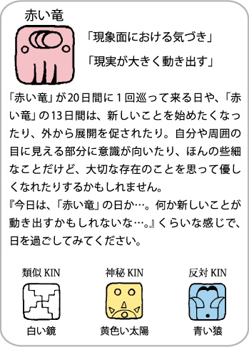
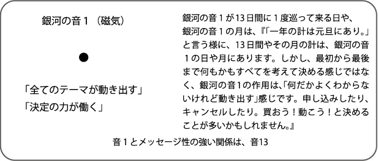

今日のKINは？
銀河のマヤでは、今日 は
の13日間の 日目、銀河の音 の日です。 152日周期では、第 の城です。
の52日間の中で、 の13日間です。


の13日間の 日目、銀河の音 の日です。 152日周期では、第 の城です。
の52日間の中で、 の13日間です。
| 13日間の太陽の紋章 (ウェイブスペル）は、 |
今日の銀河の音は、 | 今日の太陽の紋章 |
|  |  |
- ＜13日周期の色の捉え方＞
- 赤には、起「はじまり（創始）」
- 白には、承「初心にかえる（洗練）」
- 青には、転「変化・展開（変容）」
- 黄には、結「答えが見えてくる（熟成）」
- ＜５つの城の意味＞
- 第１の城 赤（創始・始まり）
- 第２の城 白（洗練・深める）
- 第３の城 青（変容・展開する）
- 第４の城 黄（熟成・答えが見えてくる）
- 第５の城 緑（まとめ・仕上げ）
Learn Where to Get Started!
素敵な動きを手軽に実装できるJavaScriptライブラリです。 アニメーション効果をつけたり、Ajax（エイジャックス）を使って外部ファイルを読み込んだりと色々なことができます。
Webページの作成に使用される言語です。HTMLとCSSを組み合わせることで、静的なページを作り上げることができます。
オープンソースの動的なプログラミング言語で、 シンプルさと高い生産性を備えています。大きなWebアプリケーションから小さな日用ツールまで、さまざまなソフトウェアを作ることができます。
Learn Where to Get Started!
HTML & CSS
Webページの作成に使用される言語です。HTMLとCSSを組み合わせることで、静的なページを作り上げることができます。
jQuery
素敵な動きを手軽に実装できるJavaScriptライブラリです。 アニメーション効果をつけたり、Ajax（エイジャックス）を使って外部ファイルを読み込んだりと色々なことができます。
Ruby
オープンソースの動的なプログラミング言語で、 シンプルさと高い生産性を備えています。大きなWebアプリケーションから小さな日用ツールまで、さまざまなソフトウェアを作ることができます。
PHP
HTMLだけではページの内容を変えることはできません。PHPはHTMLにプログラムを埋め込み、それを可能にします。